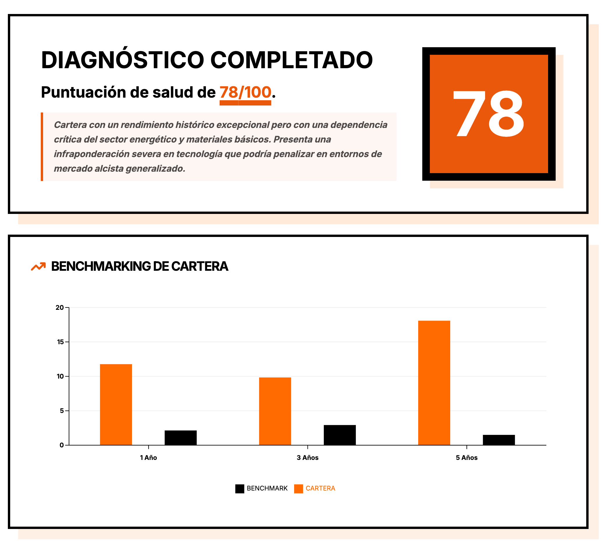

2026

X-RAI VISION
Herramienta inteligente de auditoría de carteras que usa IA Generativa para analizar informes PDF de Morningstar.
ReactGoogle Gemini APITailwind CSSNode.js
Por qué lo construí
Para ofrecer un análisis profundo de la salud de la cartera y riesgos ocultos a través de una interfaz interactiva.
Características Clave
- Análisis automatizado de PDFs usando Google Gemini Pro Vision
- Identificación de exposición sectorial y duplicidades de fondos
- Dashboard completo con Puntuación de Salud de Cartera
Visitar X-RAI Vision →